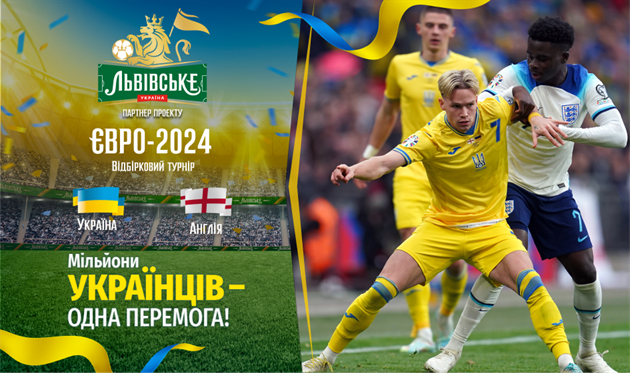
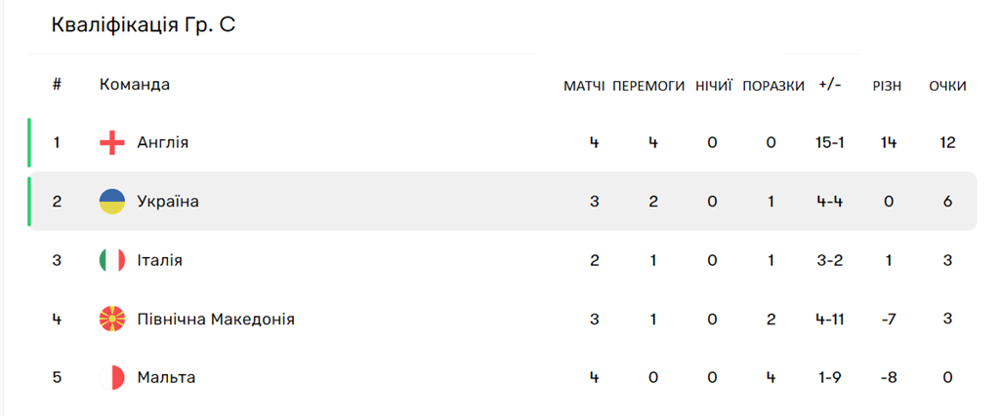
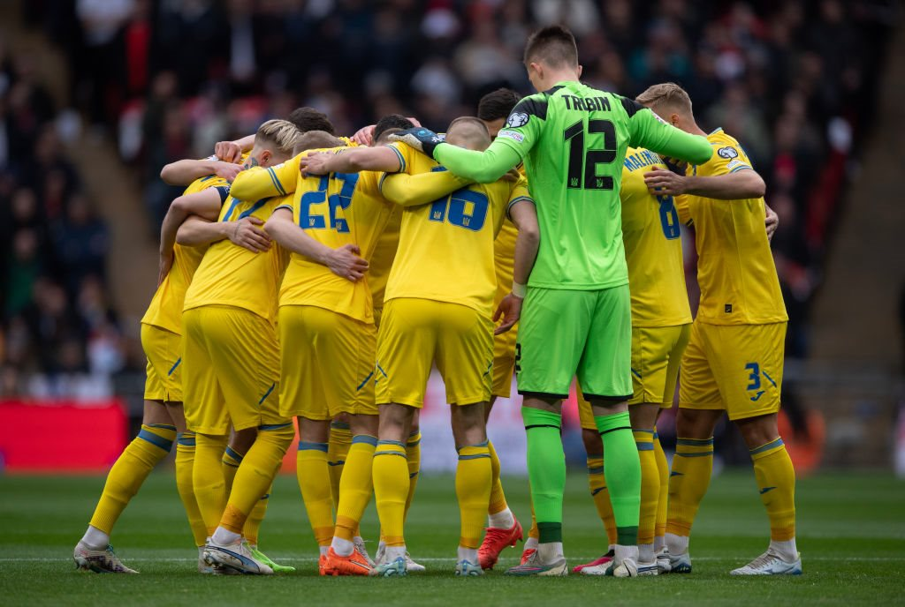
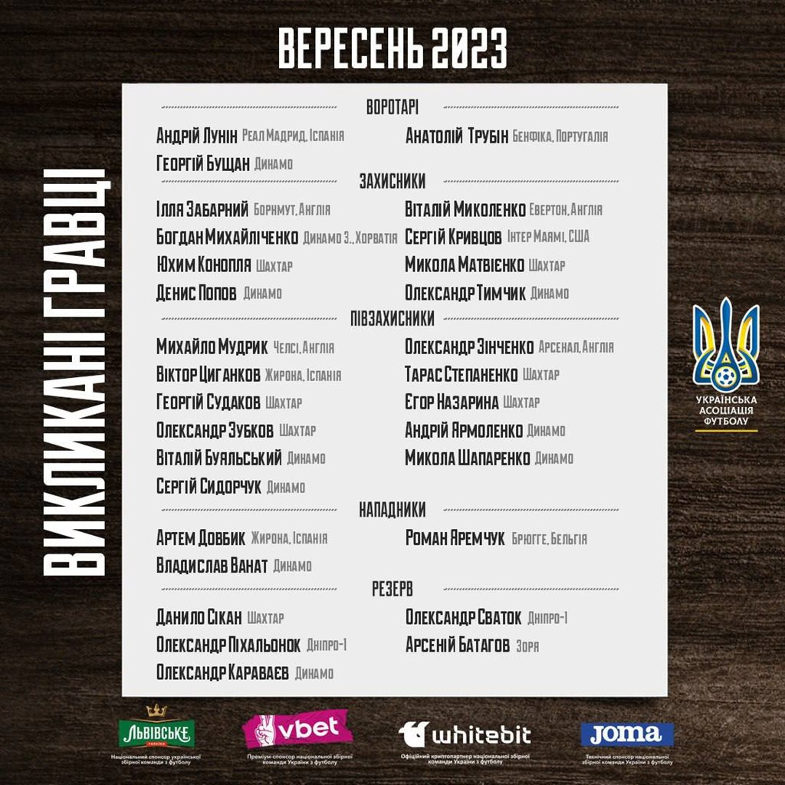
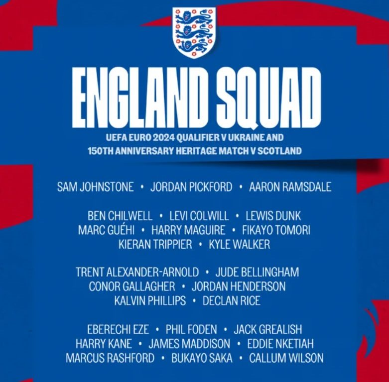
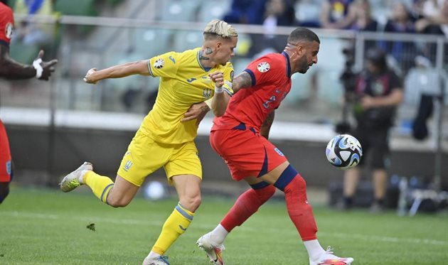

У рамках відбору до фінальної частини ЄВРО-2024 національна збірна України у своєму наступному матчі зіграє проти Англії.
Україна - Англія. Анонс та результат футбольного матчу

Анонс матчу

СУБОТА, 9 ВЕРЕСНЯ, 19:00. МІСЬКИЙ СТАДІОН, ВРОЦЛАВ (ПОЛЬЩА). ГОЛОВНИЙ АРБІТР — ГЕОРГІ КАБАКОВ (БОЛГАРІЯ). ПРЯМА ТРАНСЛЯЦІЯ НА MEGOGO та СУСПІЛЬНЕ
Національна збірна України продовжує свій нелегкий шлях у відборі на чемпіонат Європи, і тепер "синьо-жовті" знову зустрінуться з головним фаворитом своєї групи. Минулий матч проти Англії на Вемблі, тоді ще під керівництвом в. о. головного тренера Руслана Ротаня, Україна програла з рахунком 0:2, але всі ми чудово пам'ятаємо та розуміємо, що тоді за грою рахунок міг бути більш розгромним на користь команди "трьох левів", ніж це вийшло у підсумку.

Вже під керівництвом нового головного тренера Сергія Реброва збірна України здобула дві перемоги у відбірковому циклі ЄВРО-2024, проте не можна сказати, що ці перемоги над Мальтою та Північною Македонією були здобуті без жодних нервів. Зрозуміло, що на той момент новий тренерський штаб працював у збірній України фактично кілька днів і за такий короткий час якось кардинально вплинути на гру команди було неможливо.
Тоді на першому місці стояв результат – він був здобутий. Загалом завдання не змінилося й зараз, тому навряд чи Ребров із командою підходять до матчу лише з думкою про те, як би менш крупно програти одній із найкращих збірних світу. А будемо відвертими: саме така думка спіткає багатьох українських уболівальників напередодні зустрічі з англійцями.
Немає жодного сумніву, що збірна Англії є очевидним фаворитом напередодні поєдинку з Україною. Навіть якщо брати до уваги наших легіонерів, то Олександр Зінченко повернувся до стартового складу Арсеналу після травми лише у четвертому турі АПЛ, Михайло Мудрик виходить за Челсі виключно з лави для запасних і теж нещодавно мав несерйозне ушкодження, а Віталій Міколенко втратив місце у старті Евертона після підписання 38-річного Ешлі Янга.
Наразі тільки Ілля Забарний у Борнмуті та Віктор Циганков у Жироні є залізними гравцями основи на старті цього сезону, і до їхньої поточної форми питань майже немає, тоді як Анатолій Трубін давно не грав, Артем Довбик продовжує адаптуватися до гри у Ла Лізі, а Роман Яремчук вирушив до Валенсії з черговою спробою реанімувати кар'єру.
А що має Англія? Наприклад, є Джуд Беллінгем, який показує щось неймовірне у мадридському Реалі. Або Деклан Райс, який уже зараз приносить велику користь Арсеналу. Або Джеймс Меддісон, який відразу ж став ключовою складовою в системній перебудові Тоттенгема. Є Гаррі Кейн, Букайо Сака, Кайл Вокер... Цей список, здається, можна продовжувати нескінченно — ви самі це прекрасно розумієте.
Але в той же час збірна Англії не є командою, яка взагалі не має ніяких вад. Так, лінії атаки та півзахисту у "трьох левів" виглядають просто феноменально, але чи можна сказати те саме про лінію оборони? У першу чергу тут як мінімум уже є питання через цілу низку травм: Шоу, Стоунс, Мінгз, Ріс Джеймс, Александр-Арнольд – усі вони не зіграють проти України, але це не означає, що їх неможливо ніким замінити. Питання в тому, як ці заміни працюватимуть, що дає нашій команді хоч якусь надію на позитивний результат. Хмарну, але все ж надію.
За версією букмекерів, фаворитом майбутнього протистояння є підопічні Гарета Саутгейта. Так, на перемогу Англії пропонується коефіцієнт 1,44, тоді як потенційний успіх України оцінюється показником 8,70. Ймовірність нічийного результату представлена коефіцієнтом 4,75.
Склади команд
Склад збірної України:
- Лунін
- Караваєв
- Забарний
- Матвієнко
- Миколенко
- Судаков
- Степаненко
- Зінченко
- Циганков
- Довбик
- Мудрик
Склад збірної Англії:
- Пікфорд
- Вокер
- Магвайр
- Геї
- Чілвелл
- Беллінгем
- Райс
- Меддісон
- Сака
- Кейн
- Рашфорд


Основні події
Триває вереснева міжнародна павза й нарешті черга дійшла до відбіркового квінтету C чемпіонату Європи-2024, у складі якого виступає збірна України. Команда під орудою Руслана Ротаня розпочинала кваліфікацію невдалим матчем на Вемблі проти англійців, але потім її підхопив Сергій Ребров та де в чому покращив наше турнірне становище двома перемогами над Північною Македонією та Мальтою, які були фактично обов’язковими.
І все це було зроблено заради того, аби під час першого збору в рамках нового сезону "синьо-жовті" в гарному гуморі підходили до надзвичайно складних протистоянь проти тих самих "трьох левів", але вже у Вроцлаві, а також італійців, які очікуватимуть на нас уже найближчими днями. Саме здобуті раніше шість очок в матчах проти відвертих аутсайдерів групи давали нам можливість сподіватись на видовищне завершення групового раунду, проте для цього потрібно було щось вигадувати в матчі-відповіді проти команди Гарета Саутгейта.
Англія натомість намагалась зіграти проти нас у тому самому стилі, що й у першій грі — багато контролю м’яча та постійні передачі на загострення. Ось тільки цього разу темп просування футболістів Саутгейта був набагато нижчим за тодішній, тож і нашій команді було відносно комфортно поратись із навантаженням. Не без пригод у вигляді залишених у небезпечних зонах гравців суперників, але захист команди Реброва свою задачу виконував доволі непогано до певного часу.
Оскільки тиск на самому початку гри було успішно подолано, наставав час і самим щось пропонувати з точки зору атаки. Арсенал для вибору в нас тут був, звичайно, не такий різноманітний, як у суперників, але флангові передачі працювали не набагато гірше за їхні. Яскраве підтвердження тому — гол Зінченка на 26 хвилині, коли його прострілом із правого флангу штрафного на другий темп знайшов у відмінній позиції Конопля.
Здивуванню англійців у той момент не було межі, але грати доводилось уже з відставанням за рахунком, що відверто дратувало зірок такого рівня, як Джуд Беллінгем чи Джеймс Меддісон. Проте завжди залишалась досяжною опція з Гаррі Кейном, і саме його переведення на правий фланг нашого штрафного за спину Миколенку на Вокера майже від центрального кола дозволило Англії зрівняти рахунок.
То був єдиний момент, коли наш захист цього вечора реально не вгледів за суперниками. Аби цього не траплялось і надалі, Ребров долучив до гри Кривцова замість Матвієнка на другу половину матча. Звичайно, рівень був вищим за МЛС, тому нашому легіонеру було важкувато в боротьбі проти того-таки Кейна в повітрі, проте все одно захист виглядав доволі цілісним, незважаючи на поодинокі пригоди біля воріт Бущана.
Англія намагалась активно використовувати фланги, на що ми відповідали подекуди перспективними контратаками, але Мудрик цього вечора так і не втік жодного разу від Вокера належним чином, а на протилежному боці поля Циганков та Конопля, хоча й залишались вражаюче активними, усе ж таки більше розмірковували над грою в захисті.
У команди Саутгейта в другому таймі в підсумку був лише один непоганий момент — постріл Саки в поперечину на зразок того, що був у першій грі, проте Бущан допоміг м’ячу поцілити у верхній каркас воріт. А у нас було падіння Мудрика через фол Рашфорда в пів колі перед чужим штрафним, але за нього так нічого й не дали арбітри, тож у підсумку закономірна нічия.
Результат матчу
Україна — Англія 1:1
Голи: Зінченко, 26 — Вокер, 41
У рамках п'ятого туру відбору у фінальну частину ЄВРО-2024 національна збірна України зіграла внічию з Англією, яка є фаворитом групи С.
На 26-ій хвилині цього протистояння "синьо-жовті" повели в рахунку завдяки голу Олександра Зінченка, проте Кайл Вокер до перерви зміг повернути паритет на табло.
Вже у другому таймі команди не забивали, а фінальний свисток зафіксував підсумковий рахунок 1:1.
